Dans ce module, nous décrirons comment un chargement de déchets (vrac ou conditionnés, solides, pâteux ou liquides) est réceptionné, stocké et préparé avant incinération.
À la fin de ce module vous serez capable de recenser les tâches de maintenance et les règles de sécurité liées à l’accueil, au stockage et aux pré-traitements des déchets dans une usine d’incinération de déchets dangereux.
Vous pourrez identifier certains équipements de préparation des déchets avant traitement et pourrez expliquer leur principe de fonctionnement.
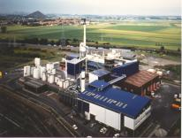
Principes généraux de réception, stockage, tri et prétraitement des déchets dangereux
Suivons un peu le parcours des déchets depuis l’entrée de l’usine de traitement
jusqu’aux systèmes d’alimentation du four.
Les déchets arrivent par camion après la collecte (camion citerne, camion benne vrac ou camion plateau pour les déchets conditionnés).
Le camion est pesé et le chauffeur apporte au laboratoire l’ensemble des documents accompagnant le chargement (et en particulier le BSDI)
Le laboratoire effectue un prélèvement du chargement et analyse la conformité avec l’analyse effectuée préalablement.
Le déchet est déchargé dans le stockage adéquat (fosse à solides ou cuve) ou sur la zone de tri (déchets conditionnés)
Les déchets conditionnés sont préparés (pompage, broyage, reconditionnement) et homogénéisés avec les déchets vrac.
Rappel : catégories de déchets dangereux
Les déchets dangereux susceptibles d’être incinérés sont caractérisés :
Par leur aspect physique :
solide (granulométrie plus ou moins grossière)
boue (d'épaisseur et d'homogénéité variables)
liquides (contenant des quantités variables de sédiments)
Par leur conditionnement :
VRAC : citerne de 20m3 pour les liquides, benne de 15 à 30 m3 pour les solides et les boues ;
CONDITIONNES : en cubitainer plastique ou métal(1m3), en fûts (<200 litres, métallique, plastique ou carton), en petit conditionnement (<100 litres, bidons, bouteilles, flacons…) ;
Isoconteneur : conteneur étanche, double enveloppe, inerté à l’azote pour transport de produits spéciaux.
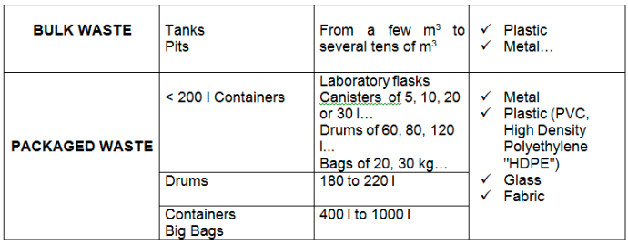
Par leurs propriétés chimiques :
acides contaminés ou bases
solvants
solvants chlorés
eaux polluées
liquides cyanurés
produits spéciaux (goudrons, polymères…)
La réception des déchets
Le parcours des déchets depuis l’entrée de l’usine de traitement jusqu’aux fosses ou cuves de réception passe par les phases suivantes : Acceptation préalable - Pesée, réception administrative des chargements - Prélèvement d’échantillon - Contrôle des entrées - Les règles de circulation dans l’usine - Plate-forme de déchargement.
Acceptation préalable
L’acceptation préalable est un acte essentiel dans la prise en charge des déchets pour tous les centres de traitement de Sarp Industries. Cette procédure répond à des exigences réglementaires, aux besoins d’information des exploitants, aux soucis de la sécurité et enfin à l’application des barèmes de tarification.
Exigences réglementaires
La procédure d’acceptation préalable est le plus souvent exigée dans les arrêtés préfectoraux. Ceux-ci précisent parfois précisément les paramètres qui doivent être pris en compte.
Pour les unités d’incinération, la procédure d’acceptation est clairement précisée dans l’arrêté ministériel du 10 octobre 1996 relatif à l’incinération des déchets industriels spéciaux.
Information des exploitants
Les exploitants doivent prendre en compte un certain nombre de paramètres physico-chimiques afin de vérifier que les produits sont compatibles avec leurs installations. En particulier il faut veiller à ce que la qualité du résultat final (déchets ultimes ou effluents) soit compatible avec les exigences réglementaires.
L’analyse d’un déchet se fait, dans la plupart des cas, à partir d’un choix « à priori » de la filière de traitement et de la filière d’élimination. Ce choix est basé sur les informations en possession du chimiste, de son expérience et de la connaissance qu’il a des procédés de l’usine.
L’analyse sert alors à vérifier les contraintes réglementaires et les paramètres de sécurité. Le chimiste, à partir de l’aspect du produit et de son origine, examine les facteurs clefs qui risquent d’interdire la filière d’élimination la plus intéressante à priori. Si c’est le cas, le déroulement de l’analyse est modifié pour examiner une nouvelle filière.
Dans ce contexte, le chimiste doit parfaitement connaître les contraintes des procédés.
Ces besoins sont en général assurés par les essais réalisés sur les échantillons fournis par les clients.
Sécurité
Il est impératif de prendre en charge les déchets avec le maximum de garanties concernant la sécurité. Les contrôles réalisés dans nos laboratoires procurent un certain nombre de renseignements permettant d’identifier des risques potentiels (inflammabilité, présence d’éléments toxiques,…) et d’appliquer des principes généraux concernant par exemple la compatibilité des produits entre eux. Ils sont cependant largement insuffisants pour couvrir tout le champ des risques liés aux produits utilisés par les industriels.
Barèmes de tarification
Les prix des traitements sont établis en fonction des moyens mis en œuvre pour le traitement (filière retenue, réactifs, quantité et nature des résidus ultimes) et sur les difficultés particulières rencontrées (manutention, déconditionnement, prétraitement). Ces paramètres sont pour la plupart sélectionnés parmi les informations identifiées comme étant essentielles par l’exploitant.
Les résultats des analyses physico-chimiques réalisées avant l’acceptation des déchets sont portés sur une fiche signée par le responsable du laboratoire.
Ainsi, la qualité du traitement étant liée à la nature des déchets stockés, le laboratoire procède à une sélection rigoureuse des déchets avant acceptation, déchets qui proviennent d’entreprises industrielles régionales.
Pesée, réception administrative des chargements
Les déchets arrivent par camion après la collecte. Pour être admis sur le site, la pesée et la réception administrative des chargements doivent être réalisées.
a -Pesage des camions
REMARQUE : Le pesage est une fonction importante puisqu’il permet de suivre et de quantifier le flux de matières entrant et sortant de l’usine.
DESCRIPTION DU SYSTÈME : A l’entrée de l’usine, le chauffeur du camion avance son véhicule sur le pont bascule puis s’adresse à un réceptionniste du laboratoire qui valide le pesage du chargement.
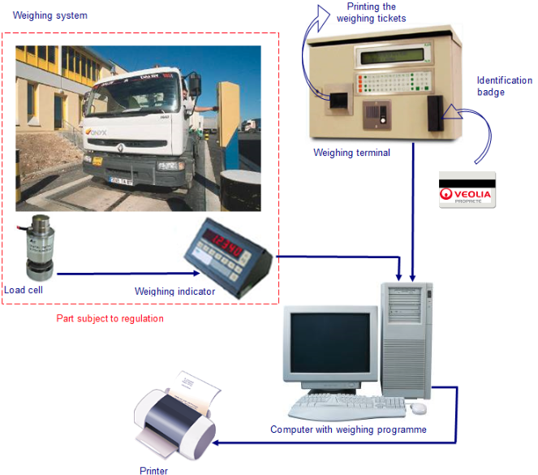
Les camions peuvent aussi être accueillis par une borne de pesage.
Cette borne comprend :
un lecteur de badge d’identification ;
un écran d’affichage de la pesée ;
un interphone et un bouton d’appel pour communiquer avec la salle de quart ;
un écran pour la lecture des renseignements concernant le camion et le chargement, un clavier pour la saisie des informations à recueillir ;
une imprimante délivrant un ticket de pesée
La borne est reliée à un ordinateur situé généralement en salle de réception ; il permet d’enregistrer toutes les informations recueillies au niveau de la borne.
La pesée s’effectue sur un pont bascule installé en fosse ou non. Le pont en fosse a sa partie supérieure sur laquelle roule le camion au niveau de la voirie.
Le pont hors fosse est recommandé car il présente les avantages d’avoir un coût et un entretien réduits ainsi que la garantie que toutes les roues du véhicule sont bien pesées. Le principal avantage du pont en fosse est qu’il est intégré au sol et ne constitue pas un obstacle à la circulation transversale. En revanche, les opérations d’entretien et de réparation sont difficiles car réalisées en fosse. Les pesées peuvent être faussées si le camion ne se positionne pas correctement (roues en partie hors du pont).
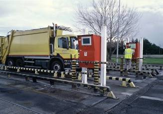
Le pont bascule est composé de :
d’un tablier métallique sur lequel le camion peut rouler ; le tablier est désolidarisé de la fosse ;
de quatre capteurs, ou pesons, qui supportent le tablier métallique. Sous le poids du camion ses capteurs se déforment et envoient un signal de faible courant à l’indicateur.
L’indicateur renseigne la borne et l’ordinateur sur le poids du camion. L’ensemble capteurs et indicateurs est homologué et réglementé ;
d’une plaque métallique mise à niveau de la voirie qui permet l’accès en fond de fosse pour le nettoyage et la maintenance.
A l’intérieur en salle de réception, sont disposés :
un ordinateur ;
une imprimante alimentée en papier continu, qui imprime au fur et à mesure les renseignements sur le transporteur et les pesées ;
un afficheur de pesée pour les opérations manuelles.
TYPES D’INFORMATIONS A RECUEILLIR
Au niveau de l’exploitation de l’usine, l’enregistrement du poids de chaque camion est très important puisque l’une des principales rémunérations de l’entreprise est liée à la masse de déchets incinérés.
L’enregistrement permet d’établir les facturations et de savoir si le camion est un fournisseur (transport de matières premières pour l’usine) ou un client (collecte de déchets pour incinération).
D’autres informations doivent être recueillies pour identifier la nature et la provenance des déchets ménagers (ville).
Pour cela, il faut disposer d’un moyen pour identifier chaque camion qui entre sur le site. Chaque chauffeur de camion dispose d’un badge qu’il introduit dans le lecteur de la borne à chaque entrée.
Les informations contenues sur le badge concernent les caractéristiques du camion :
son numéro d’immatriculation ;
sa tare ou poids à vide ;
le code du transporteur ;
la date et l’heure.
Chaque camion est ainsi répertorié et on peut alors connaître son propriétaire, le lieu, la date et l’heure de son arrivée sur le centre ainsi que le type de déchet qu’il contient.
Le conducteur accède à toutes ces informations et peut demander à les modifier en cas de désaccord, par exemple concernant la nature et la provenance des déchets.
La pesée peut alors commencer afin de déterminer la masse des déchets transportée par chaque camion.
OPERATION DE PESAGE
Elle peut être effectuée par double ou simple pesée.
La double pesée est un peu plus longue mais plus fiable dans la mesure où elle permet de connaître, à chaque passage, la tare du camion, donc la masse réelle des déchets ménagers qui a été déversée dans la fosse.
Pour effectuer la double pesée, on pèse d’abord le camion plein (masse brute du camion), puis, après déchargement, on pèse le camion vide (tare du camion). La différence entre ces deux pesées donne la masse nette du chargement.
Masse brute du camion – tare du camion = masse nette du chargement
ENTRETIEN ET MAINTENANCE
Chaque jour, un contrôle visuel permet de vérifier qu’aucun objet n’est coincé entre le tablier et la fosse. C’est la garantie que le tablier est désolidarisé de la fosse et que rien ne vient perturber la pesée.
En général, il est prévu une visite mensuelle pour nettoyage, graissage, vérification des contacts électriques, vidange de l’eau de la fosse.
Une fois par an, un spécialiste (balancier) vérifie la justesse des pesées. Un certificat de conformité est délivré par un organisme de contrôle.
b –Réception administrative des chargements
Suite à la pesée, la réceptionniste enregistre dans la base informatique du groupe les informations relatives au déchet entré avec sa nature et sa provenance grâce au BSDI correspondant au chargement.
Pour obtenir le droit de prise en charge sur le centre de traitement, tout déchet doit être identifié et répertorié.
Une fois ces opérations réalisées, le camion peut alors pénétrer sur le site pour se diriger vers l’aire de prélèvement d’échantillons du chargement.
La réceptionniste autorise le prélèvement des échantillons du chargement en délivrant un bon de dépotage vierge à remplir par les techniciens du laboratoire.
c’est lorsque le camion sera déchargé que la réceptionniste fait la deuxième pesée, enregistre le poids net et complète les informations concernant les analyses d’entrées dans la base informatique, et enfin complète le BSDI.
Prélèvement d’échantillon
Le prélèvement d’un échantillon représentatif du chargement des camions est une étape essentielle dans le contrôle des déchets.
Une de nos filiales a même breveté un système de prélèvement automatique d’échantillons dans les camions.
L’échantillon prélevé est transféré, par un système pneumatique, jusqu’au laboratoire où il sera analysé.
L’échantillon est joint au bon de dépotage vierge qui sont remis au laboratoire pour analyses et vérification de la nature du déchet.
Une « déchethèque » permet de conserver tous les échantillons prélevés.
Contrôle des entrées par le laboratoire
L’acceptation sur le site d’une expédition se fait par une série de tests plus sommaire à pratiquer sur le déchet et confirmant les critères d’orientation validés en acceptation préalable.
La conformité des déchets arrivant sur le site avec l’échantillon initial (CAP) est contrôlée au laboratoire par une analyse de vérification.
Tout déchet conforme est orienté vers une zone de déchargement décrite sur le bon de dépotage délivré au chauffeur.
En cas de refus, le camion repart chez le producteur et la DRIRE en est informée. Ce refus est consigné dans le rapport d’activité.
Les règles de circulation dans l’usine
Les chauffeurs de camion, tout comme les conducteurs d’engins, doivent se conformer aux règles de sécurité de l’entreprise.
Chaque usine possède un plan de circulation.
Les chauffeurs doivent respecter :
la signalisation à l’intérieur de l’usine (feux, panneaux stop…) ;
la vitesse maximale de 20 km/h ;
la priorité par rapport aux piétons et aux engins ;
les locaux et les équipements de l’usine.
Si les camions ne sont pas du type benne basculante, ils doivent être bâchés pour éviter l’envol des déchets dans l’usine.
Plateforme de déchargement
Le chauffeur présente le bon de dépotage correspondant à son chargement délivré par le laboratoire à une personne habilitée au déchargement des camions. Cette personne dirige alors le camion, en toute sécurité, à l’endroit précis où il doit déverser les déchets.
Une fois son camion vidé, le chauffeur se représente à la deuxième pesée et au bureau de réception pour compléter les enregistrements administratifs.
Pour être admis sur le centre de traitement, les résidus doivent répondre à des caractéristiques physico-chimiques strictes.
Les modalités d’acceptation des déchets
Déchets admis
La nature des déchets admis dans l’usine est définie par un contrat avec le client, repris dans un arrêté préfectoral d’exploitation et par le fabricant du four qui définit les limites de la garantie de fonctionnement de son matériel.
Quelques exemples de déchets admis généralement sont :
solvants halogénés et non halogénés
huiles
émulsions
déchets de fabrication
eau
déchets d'encre
déchets de peintures
boues
etc.
Voir arrêté d’exploitation pour plus de détails.
Quelques exemples de déchets non admis sont :
les déchets radioactifs
les déchets contenant des PCB
les déchets contaminés provenant d'hôpitaux, de cliniques et d'abattoirs ;
les déchets infectieux
les bouteilles de gaz
les déchets explosifs/déflagrants
etc.
Voir arrêté d’exploitation pour plus de détails.
Vérification de la nature des déchets réceptionnés
En fonction des différentes catégories de déchets admissibles dans l’usine, il faut être vigilant sur la nature des déchets avant réception. Outre les tests réalisés sur les échantillons, il faut être vigilant sur le contenu des bennes car il peut être la cause :
d’accidents (déchets trop gros ou monstres bloquant la trèmie ou l’extracteur à mâchefers) ;
d’explosion (liée à la présence de certains déchets ménagers, pots de peinture, aérosols, bonbonnes de gaz…) ;
de pollution (peinture, plastique en trop grande quantité) ;
de destruction de four (corrosion et forte augmentation de température du four liées à l’introduction de plastiques à fort PCI en trop grande quantité) ;
de contamination (déchets hospitaliers non décontaminés).
Moyens d’identification et de vérification
La vérification de la nature des déchets ne peut être effectuée qu’après déchargement des déchets dans la fosse. Le pontier ou le pelleteur doit alors brasser les déchets dans la fosse, ce qui permet d’homogénéiser les déchets et de vérifier l’absence d’objets suspects.
Conduite à tenir en présence de déchets non autorisés
En cas de découverte de déchets non autorisés, il faut absolument en informer le responsable de site et identifier le camion qui a déversé ces déchets. Le pontier ou le pelleteur en charge de l’homogénéisation sort alors ces déchets de la fosse pour les expédier dans un centre spécialisé.
Equipements et type d’analyses pratiquées au laboratoire
Les contrôles physico-chimiques sont effectués par des chimistes expérimentés qui disposent d’équipements performants.
Outre le matériel classique (verrerie, pH-mètres, conductimètres, balances, étuves…), le laboratoire est doté d’appareils sophistiqués.
Le laboratoire est équipé par exemple des instruments de mesure suivants :
un spectrophotomètre d’absorption atomique pouvant travailler en four ou en flamme pour l’analyse des métaux
un spectrophotomètre d’émission à plasma d’argon à couplage inductif (ICP, Inductively Coupled Plasma)
un spectrophotomètre à fluorescence X
un COT-mètre pour l’analyse de la matière organique
un chromatographe ionique pour la mesure des anions et notamment des chlorures
un calorimètre
un banc DCO
Voir tableau des Paramètres analytiques déterminants pour chaque filière d’élimination.
Définition des paramètres analytiques, méthodes de mesures utilisées et instrumentation
Composants formés après la combustion
Comme l’explique le module n°5, la combustion des déchets industriels dangereux est une oxydation exothermique qui produit un volume de gaz chaud très important. Ces gaz contiennent certains polluants avant traitement, notamment :
acide chlorhydrique, ou chlorure d'hydrogène (HCl);
acide fluorhydrique (HF);
oxydes d'azote (NOx);
oxydes de soufre (SOx);
monoxyde de carbone (CO);
poussière.
Il est à noter que les gaz de combustion contiennent également de l’eau (H20) sous forme de vapeur.
En plus, au cours de la combustion, se trouvent entraînées par le flux des gaz des particules de métaux dits « lourds » mélangées aux poussières. Ces molécules de métaux lourds se présentent sous forme gazeuse ou solide. Elles proviennent des composants des déchets, qui ont été incinérés, à savoir :
cadmium (Cd),
chrome (Cr),
cuivre (Cu),
plomb (Pb),
mercure (Hg),
arsenic (As),
nickel (Ni),
manganèse (Mn),
métaux provenant des différents secteurs industriels des sociétés productrices.
Compte tenu des réglementations concernant ces polluants dans les rejets atmosphériques entre autres, certains paramètres analytiques des déchets doivent être maîtrisés tels que :
Le pH
La demande chimique en oxygène (DCO)
Le carbone organique total (COT)
Les éléments métalliques toxiques
La salinité ou la minéralisation
Le pouvoir calorifique
La teneur en chlore organique et autres halogènes (F, Br , I)
La teneur en PCB
La teneur en soufre
Les odeurs.
Le pH-Potentiel d’hydrogène
On mesure le pH d’une solution de plusieurs façons :
par le papier dit « pH », qui est d’une utilisation rapide, peu coûteuse et facile à mettre en œuvre. On trempe une bandelette de papier pH dans la solution à analyser, la bandelette ainsi humectée se colore et , à l’aide d’une gamme de couleurs, on compare la couleur du papier pH avec celle de la gamme qui donne alors la valeur du pH. Cette méthode n’est pas très précise.
par comparaison avec des solutions qui changent de couleurs selon de pH des solutions dans laquelle elles sont dissoutes. On appelle ces substances des indicateurs colorés acido-basiques.
par un appareil de mesure, appelé pH-mètre, fonctionnant sur le principe de la mesure de la résistance électrique d’une solution.
La teneur en COT/DCO Carbone Organique Total ou Demande Chimique en Oxygène
Une mesure précise des substances organiques présentes dans une eau est chose difficile à concevoir, car ces substances sont innombrables et de formules très diverses ; il est impossible d’envisager l’isolement et le dosage pondéral de chacune d’elles.
C’est pourquoi les méthodes de dosage les plus répandues et les plus significatives pour apprécier sinon la teneur, du moins la nocivité, des substances organiques présentes sont celles qui utilisent comme référence la quantité d’oxygène nécessaire à les oxyder, cela dans des conditions expérimentales variables, mais chaque fois bien définies. Ces techniques de mesure sont le plus souvent désignées sous la dénomination très explicite de demandes d’oxygène ou encore d’oxydabilité.
Leur détermination est envisagée le plus souvent par la mesure de :
La demande chimique en oxygène (DCO)
Le carbone organique total (COT)
La demande chimique en oxygène (DCO)
La demande chimique en oxygène représente la quantité d’oxygène nécessaire pour oxyder, dans un certain contexte réactionnel, les substances réductrices ou oxydables contenues dans l’échantillon. Elle s’exprime en mg O2/L.
Divers oxydants ont été préconisés pour mesurer la DCO ; actuellement ne coexistent que le bichromate de potassium et le permanganate de potassium.
Le carbone organique total (COT)
La détermination du taux de carbone peut être considérée comme une très bonne approximation de la quantité de matières organiques, dans la mesure où cet élément est le constituant majeur de ces composés.
Éléments métalliques toxiques
En plus des particules de métaux dits « lourds » pouvant être entraînées par le flux des gaz, (voir intro paragraphe XI) ces métaux peuvent également se retrouver dans les résidus solides de combustion (mâchefers, cendres volantes).
Pourquoi ces métaux sont-ils appelés « lourds » ?
Les éléments traces sont des éléments chimiques présents en très faibles quantités dans les différents milieux (sol, eau, air).
Parmi ces éléments traces, certains sont nécessaires aux organismes vivants (plantes, animaux, homme) dans de très faibles quantités : il s’agit des oligo-éléments (exemple : zinc, cuivre, manganèse, bore, molybdène, cobalt, sélénium). Remarquons qu’à de trop grandes quantités et au-delà de certains seuils, ces oligo-éléments peuvent devenir toxiques.
D’autres éléments traces (plomb, cadmium, mercure, nickel, arsenic…) ne sont pas utiles aux organismes et, au delà d’un certain seuil, peuvent devenir toxiques pour le milieu naturel et l’homme. Ils sont désignés communément par le terme de « métaux lourds ». Rappelons que les métaux lourds les plus dangereux pour la santé humaine sont le cadmium, le plomb et le mercure.
Le terme « métaux lourds », généralement utilisé en langage environnemental, est souvent un abus de langage car tous ces éléments ne sont pas chimiquement des métalloïdes (exemple : l’arsenic).
Ces éléments sont soumis à des normes très strictes.
Au-delà d’une certaine concentration, les métaux lourds présentent une toxicité aiguë. Ils présentent l’inconvénient de se concentrer le long de la chaîne alimentaire.
La salinité ou la minéralisation
Les sels sont solubles dans l’eau et sont contenus dans les déchets aqueux. Ils sont caractérisés par la somme des éléments sodium (Na), potassium (K) et calcium (Ca) présents dans ce déchet, encore appelés « fondants » pour les sels Na et K. Leur présence en grande quantité endommage les fours, raison pour laquelle il est important de considérer ce paramètre.
Le pouvoir calorifique
C’est la quantité d’énergie fournie par la combustion complète d’une unité d’un combustible à pression atmosphérique.
La quantité de chaleur dégagée par 1 kg de déchet (mélange) permet de mesurer la quantité d’énergie totale produite par la combustion totale dans le four. Le PC de chaque déchet est mesuré séparément.
Pour obtenir un fonctionnement stable du four, il faut éviter des augmentations ou des chutes trop rapides de température du four dues à l’enfournement de déchets ayant des pouvoirs calorifiques (PC) trop différents.
Un régime de fonctionnement instable entraîne une mauvaise combustion et est source de polution.
C’est la raison pour laquelle il est utile d’identifier les déchets à fort ou à faible pouvoir calorifique.
*Les solvants, les huiles, les produits organiques, les plastiques, le papier ont un pouvoir calorifique très élevé. Ils brûlent très facilement et dégagent une forte quantité de chaleur.
*les liquides, pâteux ou solides contenant un majeure partie d’eau sont très difficiles à brûler, à cause de ce chargement en eau. Ils fournissent une faible quantité de chaleur.
Plus un déchet est humide, plus il est difficile à brûler.
Pour obtenir un pouvoir calorifique moyen des déchets le plus constant possible, il faut enfourner les déchets à fort PC en même temps que ceux à faible PC.
Les déchets sont très variables. Il faut alors constituer un stockage dans des cuves et fosses pour avoir des réserves de HPCI, MPCI et BPCI de pouvoirs calorifiques connus lors de l’incinération, de façon à connaître les débits à régler pour chacun des stocks.
La teneur en chlore, brome, iode et fluor (Cl, Br, I et F)
La mesure du chlore contenu dans les déchets est primordiale car elle conditionne la valeur de la T2S règlementaire :
Si teneur en chlore < 1\
Si teneur en chlore >1\
La teneur en PCB
Les polychlorobiphényles (PCB) sont trouvés principalement dans les huiles de transformateurs dans lesquels les PCB ont été à l’origine utilisés comme milieu échangeur de chaleur. Bien que l’utilisation de ces composés ait été interdite, il existe encore de nombreux transformateurs qui contiennent des PCB, ce qui conduit à des contaminations des eaux potables ou eaux usées. Ces composés sont toxiques, bioaccumulatifs et extrêmement stables.
Par arrêté préfectoral les incinérateurs de déchets dangereux ne sont pas autorisés à traiter des produits contenant plus de 50 ppm de PCB. Pour les produits dépassant ce seuil, ceux-ci doivent être envoyés dans des centres spécialisés.
La teneur en soufre
On trouve du soufre dans les produits pétroliers (jusqu’à 5\
Les odeurs
L’odeur est une sensation résultant de nombreux processus physico-chimiques, mnésiques, cognitifs, etc par des substances chimiques. Il est donc indispensable de différencier l’odeur d’un mélange gazeux de sa composition chimique. Ainsi, l’odeur doit être mesurée en tant que telle avec, si nécessaire, un complément d’information par des mesures physico-chimiques.
Spectrophotomètre à fluorescence X
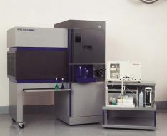
XI-Table des incompatibilités chimiques…
Certains produits sont incompatibles, c’est pourquoi il faut respecter les consignes de stockage.
les acides et les bases mélangés engendrent une réaction de neutralisation qui dégage plus ou moins violemment de la chaleur.
le mélange des produits minéraux acides avec des produits organiques ou minéraux engendre des réactions violentes (dégagement violent de chaleur, inflammation, incandescence, réaction violente, projections, décomposition, explosion immédiate, avec parfois des dégagements de produits toxiques).
les peroxydes engendrent une réaction chimique d’oxydation qui peut être plus ou moins violente.
les comburants favorisent l’inflammation des matières combustibles par leur pouvoir oxydant
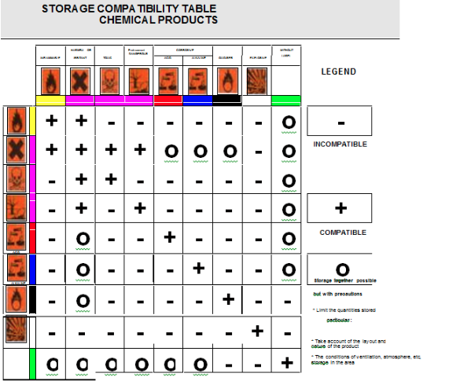
Le stockage des déchets
Les déchets liquides en vrac
Les déchets liquides arrivent sur l’usine dans des citernes routières ou des camions pompeurs de capacité 15 à 20m3.
Leur arrivée sur l’usine est planifiée. Le client qui amène ce type de déchet doit prendre un rendez-vous auprès du service planning. Ce service assure, avec le service exploitation, l’utilisation optimale des stockages liquides.
Les produits sont triés et orientés vers différents stockages car le mélange de certains d’entre eux, peuvent provoques des réactions dangereuses (échauffement polymérisation, prise en masse incendie explosion).
Le dépotage
Une fois les analyses de réception effectuées, la conformité du déchet par rapport à l’analyse préalable confirmée, le camion reçoit un bon de dépotage pour une zone précise de stockage, correspondant à la catégorie du déchet.
Un opérateur prend en charge le camion et surveille le bon déroulement de l’opération.
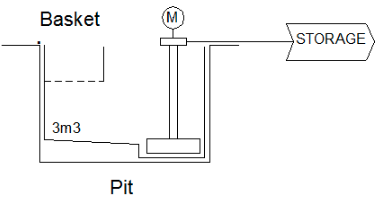
Système gravitaire :
Le camion est vidé dans une fosse à travers un panier de filtration. Une pompe reprend le liquide filtré et l’envoie dans la cuve sélectionnée.
Avantage : visibilité du produit, contrôle du déchargement
Inconvénient : le poste de travail doit être capoté ; l’atmosphère est aspirée et traitée (lavage, biofiltre, charbon actif) ; le filtre est curé manuellement régulièrement.
Système direct :
Les pompes de transfert aspirent le déchet depuis le camion à travers un filtre fermé, et le refoulent vers la cuve sélectionnée.
Avantage : système confiné, pas de traitement de l’air.
Inconvénient : pas de visibilité, nettoyage du filtre nécessite démontage.
minipage{}
minipage{0.45}
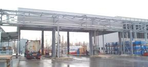
minipage
minipage{0.2}
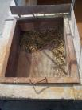
minipage
minipage
[H]
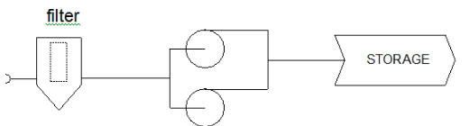
Les stockages
Les liquides « banals » (c’est à dire non réactifs) sont généralement stockés selon leur pouvoir calorifique.
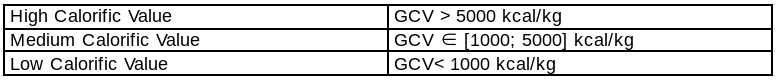
Schéma de principe d’une cuve de stockage à déchets liquides
Spécifications
Dimensions : les cuves sont généralement de capacités 100 à 200 m3, avec un fond conique. Le supportage est assuré par des pieds en béton et l’ensemble est raccordé électriquement à la terre.
Matériau : acier carbone
Equipements :
Mesure de niveau (radar), report des niveaux sur la supervision en salle de contrôle.
Sécurités niveau haut et bas (LSH et LSL)
Agitation (pour certains déchets spécifique)
Events :
La cuve peut être équipée d’un ciel d’azote (suppression d’une atmosphère explosive). Les évents sont captés, passent sur une garde d’eau puis sont traités (sur charbon actif, filtre biologique ou oxydation thermique dans le four d’incinération).
Protection incendie :
Les cuves sont équipées d’un système de détection incendie, d’un système d’extinction (canon à mousse et couronne d’arrosage).
La cuvette de rétention est aussi équipée de systèmes de détection et d’extinction.
Produits spéciaux
Acides : les acides souillées sont stockés dans des cuves spéciales, revêtu Halar (matériau céramique résistant), de petit volume (6 à 12 m3).
Odeurs : les produits particulièrement odorants sont également stockés dans des cuves spéciales, équipées d’un lavage des évents.
Déchets solides et boues en vrac
minipage{}
minipage{0.45}
{Liquides Stockage SIAP Bassens}
minipage
minipage{0.45}
{Liquids Storage SM Fos}
minipage
minipage
Les déchets solides vrac « homogènes » (terres polluées, boues homogènes, farines animales…) arrivent par camion benne de 15 à 20 m3. Ils sont dépotés dans des fosses affectées à chaque catégorie de déchet solide.
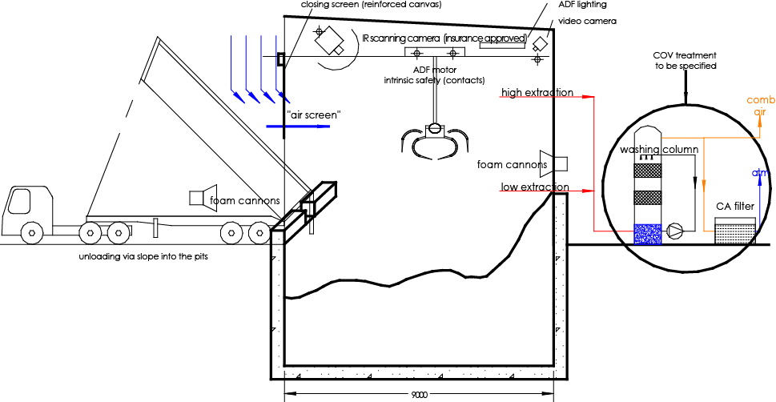
{Schéma montrant le principe d'une fosse de stockage de déchets dangereux}
{Solides fosse F1 Limay}
Spécifications
Construction : fosse en béton, contrôle de l’étanchéité par réseau de puits.
Les fosses sont construites à l’intérieur d’un bâtiment fermé (bardage). Des portes permettent l’accès aux fosses lors des opérations de dépotage.
Traitement de l’atmosphère :
L’atmosphère des fosses est captée, lavée sur une colonne de lavage et envoyée dans le four avec l’air de combustion. Lorsque le four est à l’arrêt, un système de captation sur charbon actif assure l’épuration de l’atmosphère.
Protection incendie :
Plusieurs systèmes de détection alertent sur un élévation de température ou la présence de flamme dans les fosses. Une alarme prévient les opérateurs qui déclenchent les systèmes d’extinction.
Ces système d’extinction sont des canons à mousse intérieurs et extérieurs aux fosses.
Les déchets solides « non homogènes » nécessitent un pré-traitement par broyage. Ils sont stockés sur la zone broyage, dans des fosses ou dans des alvéoles.
Les déchets conditionnés
Catégories
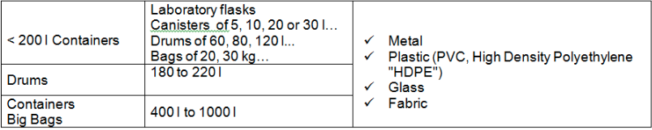
Les déchets conditionnés, comme les déchets vrac, peuvent être liquides, solides, pâteux ou gazeux, organiques ou minéraux…
Spécificités
Très souvent, parce que les quantités produites (et donc à transporter) sont faibles, il y a rupture de charge entre le producteur et le centre de prétraitement, dans un centre de transit.
Les filières finales de « traitement / valorisation » sont en général conçues pour prendre en charge des déchets vrac.
C’est pourquoi, avant de rejoindre les filières de traitement / valorisation, les déchets conditionnés doivent passer par une étape de déconditionnement (mise en vrac). Cette plate-forme peut être intégrée au centre de traitement / valorisation ou être extérieure.
Pour les déchets conditionnés, la prise en charge sur la plate-forme de prétraitement consiste à :
Déconditionner / prétraiter les déchets pour constituer un volume vrac homogène livrable aux filières de traitement / valorisation
Ou
Conditionner les déchets « difficiles » pour les sécuriser et les introduire en faibles quantités dans les filières de traitement (exemple enfournement direct)
Le nombre important de conditionnements, l’hétérogénéité des déchets, les risques liés aux incompatibilités éventuelles requièrent la mise en œuvre de moyens importants (surface de stockage, nombre d’opérateurs, moyens de sécurité …) et entraîne la multiplication des manipulations par rapport aux déchets vrac.
1 tonne de déchets en vrac = 1 réservoir de stockage
1 tonne de déchets en conteneurs de 1 m3 = 1 conteneur
1 tonne de déchets en fûts de 200 litres = 5 conteneurs
1 tonne de déchets en bidons de 10 l = 100 conteneurs
Zoom : DDD de quoi parle-t-on ?
On parle de DDD (Déchets Dangereux Diffus) lorsqu’on qualifie les déchets produits par les petits producteurs. Il s’agit des déchets des artisans, des petites entreprises, des commerçants, des laboratoires de recherche, des établissements d’enseignement….
Les agences de l’eau associent le terme de DDD à la notion de « petite » quantité produite annuellement (par site ou par grande filière) et / ou à la taille de l’entreprise productrice de déchets (nombre d’employés - critères PME / PMI). Dans la majorité des cas, les DDD sont des déchets conditionnés mais ils peuvent être aussi conditionnés en vrac. Tous les déchets conditionnés ne sont pas des DDD (ex.les déchets conditionnés de grandes sites industriels).
Stockages
Immobilisation temporaire des déchets
Avant déconditionnement, prétraitement ou conditionnement : les déchets sont stockés conditionnés Par exemple sur étagères. Le stockage s’effectue par familles (déterminées par le tri)
Après déconditionnement, prétraitement ou conditionnement : les déchets peuvent être stockés en vrac (liquides en cuves, broyats en fosses) ou conditionnés (transit, filière directe)
Pour certains déchets sensibles aux élévations de température par exemple, le stockage peut se faire en zone ou armoire réfrigérée.
Containers et fûts
Une fois analysés et leur filière de traitement identifiés, les containers et les fûts sont stockés sur des aires couvertes, en attente de leur transfert vers les zones de pré-traitement.
Le stockage répond à des règles strictes d’organisation (catégorisation des produits, isolement des produits réactifs…) afin de minimiser les risques.
Ces aires sont sur rétention : une fuite sur un contenant est confinée.
Elles sont également équipés de systèmes de détection et de protection incendie (généralement réseau de sprinklers d’eau dopée et moyens mobiles).
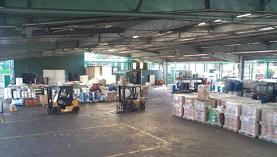
{Drums zone SOLAMAT-MEREX Rognac}
Petit conditionnement
Parmi ces déchets, on retrouve souvent des déchets très réactifs, qui nécessitent donc un stockage et une organisation particulière.
Les petits conditionnés sont souvent réceptionnés sous forme de palettes ou de caisse-palettes contenant un grand nombre de contenant divers.
Ces déchets sont stockés dans des alvéoles avant et après les opérations de tri, en respectant des règles strictes de sécurité (non proximité de produits réactifs, ségrégation des risques…)
Chaque alvéole est équipée de murs et de portes coupe-feu, ainsi que de systèmes de détection et de protection incendie (détecteurs de flamme et réseau de sprinklers).
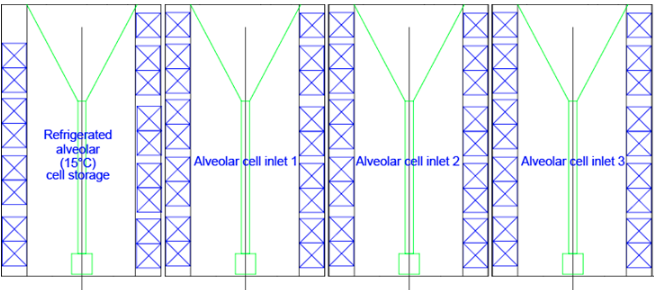
Engins de déblaiement et de levage
Rôle
Pour la manutention ou le levage des charges, on trouve couramment dans les usines des engins mécaniques à conducteur porté :
la pelleteuse (ou tractopelle);
le chariot automoteur (ou chariot élévateur).
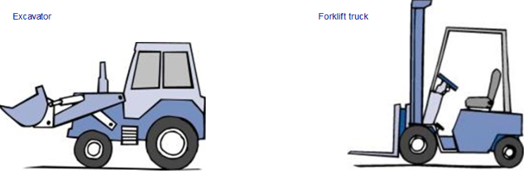
Autorisation de conduite
Seules les personnes en possession de l’autorisation de conduite délivrée par le directeur de l’usine sont autorisées à conduire les engins à conducteur porté.
Vérifications à la prise de poste
Avant d’utiliser les engins, le conducteur doit vérifier les points suivants :
l’état des pneumatiques;
l’état de charge de la batterie pour les chariots électriques;
l’absence de tâche d’huile sous l’engin;
les circuits hydrauliques;
le niveau d’huile du circuit de freinage;
le niveau de carburant;
l’efficacité des freins d’immobilisation et de service;
le fonctionnement du système de manutention;
le fonctionnement de l’avertisseur sonore.
Si l’engin présente la moindre défectuosité, il faut la signaler immédiatement et la faire réparer.
Règles de sécurité
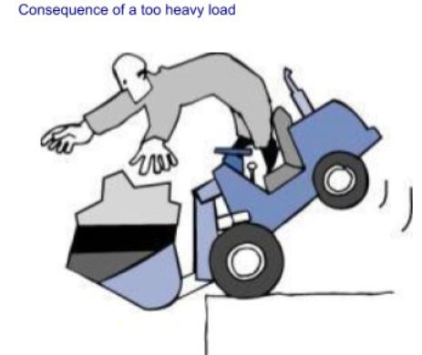
Pour éviter de nombreux accidents, il faut respecter les quelques règles de base suivantes:
circuler à vitesse réduite dans l’enceinte de l’usine;
ne jamais circuler avec les fourches ou le godet en position haute, à vide ou en charge; les garder à environ 15 cm du sol;
avant toute intervention sur un engin, mettre le godet ou les fourches en position basse;
ne jamais lever une charge supérieure à la capacité de l’engin;
ne pas transporter des personnes sur des engins non prévus à cet effet;
être vigilant lors des manœuvres;
ne jamais se placer sous une charge;
débrancher la batterie avant chaque intervention d’entretien.
Consignes de fin de poste
Après avoir utilisé l’engin de manutention, le conducteur doit replacer l’engin à sa place de stationnement et effectuer les consignes de fin de poste suivantes :
laisser le godet ou les fourches en position basse;
arrêter le moteur et mettre au point mort;
serrer le frein d’immobilisation;
ne pas laisser la clé de contact sur le tableau de bord du chariot en l’absence du conducteur.
Préparation des déchets avant incinération
Rôle
Etant la diversité (types et contenants) des déchets dangereux reçus sur les centres SARPI, il est nécessaire de procéder à une préparation de charge avant de les introduire dans le four.
Cette préparation consiste en un déconditionnement (broyage, pompage…) et une homogénéisation. Elle permet de casser la réactivité des déchets, de réduire leur granulométrie et d’uniformiser leur propriétés physico-chimique. Tout ceci dans le but de faciliter leur introduction dans le four et d’améliorer leur combustion.
Homogénéisation
Les déchets vrac solides et pâteux doivent être mélangés avant injection dans le four :
pour obtenir un aspect physique (consistance, viscosité…) compatible avec les moyens d’injection,
pour obtenir une homogénéité garantissant un pouvoir calorifique le plus égal possible dans le temps, et donc assurer de bonnes conditions de combustion.
Ce mélange est généralement réalisé dans les fosses de stockage, à l’aide du grappin et d’une pelle mécanique.
Pompage
Les containers et fûts contenant des liquides sont généralement pompés, par catégories (HPC, BPC, Chlorés…), et regroupés dans des cuves intermédiaires avant transfert vers les stockages vrac liquide.
Les contenants sont soit valorisés (recyclage métal) soit broyés et incinérés (s’il sont trop souillés)
minipage{.60}
Dans ce système, la pompe centrifuge peut être considérée comme une pièce d’usure. Au bout d’un certain nombre d’heures de fonctionnement avec des produits très divers et parfois agressifs (solvants, sédiments), elle doit être remplacée.
Une autre technique, utilisant une pompe à vide, évite l’usure de l’équipement de pompage. Le vide est fait dans la cuve tampon. Par contre, il faut traiter les vapeurs issues de la pompe à vide (en particuliers lorsque l’on pompe des solvants).
minipage
minipage{.35}
minipage
Broyage
Pour réaliser une bonne homogénéisation des différents déchets reçus, leur granulométrie doit être suffisamment faible.
Le broyage concerne donc les déchets hétérogènes de granulométrie importante : emballages souillés (pots de peintures, fûts souillés issus du pompage), conditionnés (fûts de solides, petits conditionnés).
Il existe plusieurs techniques de broyage adaptées aux différents types de déchets à broyer, à leur dangerosité, à leur réactivité.
Déchets "secs"
Il s’agit majoritairement des emballage souillés, qui arrivent dans l’usine sur palettes ou dans des bennes. Cette catégorie peut également être appelée « vrac à broyer ».
Ces déchets sont généralement peu réactifs et peuvent être broyés dans des installations équipées des sécurité classiques.
{Exemple d'une rectifieuse}
Exemple d’installation de broyage :
Une grue alimente un déchiqueteur : il s’agit d’un broyeur équipé de deux arbres munis de dents largement espacées qui forcent les déchets à travers une table de coupe.
La protection incendie est assuré par des canons à mousse au niveau :
de l’alvéole de stockage
de la trémie du broyeur
de la benne de réception des broyats
De plus une brumisation d’eau au dessus de la trémie assure la prévention des départ de feu et empêche la dispersion des poussières. La trémie peut être fermée, si besoin, par un couvercle.
Le broyeur utilisé est généralement un déchiqueteur.
Déchets réactifs et Boues
Il s'agit principalement de déchets en petits emballages, susceptibles de produire des réactions chimiques lors du déconditionnement par broyage.
Il s’agit principalement de déchets en petit conditionnement, susceptibles de produire des réactions chimique lors du déconditionnement par broyage.
Le broyage a, dans ce cas, deux rôles : déconditionner et casser la réactivité.
Ces installations sont généralement capotées et inertées à l’azote, qui garantit l’absence d’oxygène et minimise les risques de réaction. Les déchets sont introduits dans le broyeur à l’aide de différents moyens de levage (ascenseur, grappin…) à travers des sas.
Le broyeur est généralement une cisaille : constituée de deux arbres équipées de dents tournant en sens contraire à faible vitesse, elle happe les déchets entre ces dents et les découpe en lambeaux.
Une installation complète est, de plus, équipée d’un mélangeur en sortie du broyeur, qui réalise l’étape d’homogénéisation et permet d’ajuster, par des ajouts appropriés d’huile, d’eau polluées ou de pulvérulents, le PCI et la viscosité du mélange.
Enfin, afin de garantir l’absence de contact du déchet avec l’atmosphère, l’équipement d’injection (pompe à boues ou vis ou tapis) peut être installé en sortie du mélangeur.
Ce type d’installation fonctionne dans les usines d’Europe du Nord, et est à l’essai sur nos usines en France.
Exemple d’une installation de Broyage + Mélangeur + Injection
Déchets textiles et cartons
Ces déchets nécessitent d’être découpé plusieurs fois pour obtenir une granulométrie correcte et être injecté dans le four.
Des cisailles 3 ou 4 arbres sont généralement utilisées. Deux arbres effectuent le découpage ; une grille de calibration laisse passer les déchets suffisamment réduits ; 1 ou deux arbres assurent la remontée des déchets hors calibre vers les arbres de découpe.
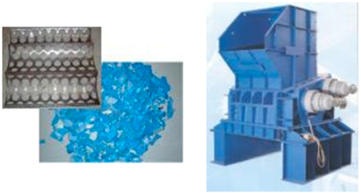
Déchets plastiques
Les lots d’emballage plastique peu souillés peuvent être broyés très finement afin de fournir un bon combustible de substitution, en addition des boues pour l’incinération, ou tel quel pour les industries de production du ciment ou de la chaux.
La granulation des plastiques (généralement bidons) et obtenue grâce à un granulateur. Ce broyeur est composé d’un seul arbre munis d’un grand nombre de petits couteaux, tournant à grand vitesse contre une table de coupe muni de contre couteaux.
Une grande attention doit être apporté au tri des déchets en amont de cet équipement fragile (une pièce métallique peut provoquer de sérieux dégâts).
Reconditionnement
Certains déchets dangereux très réactifs (produits de laboratoire par exemple) ne peuvent en aucun cas être mélangés avec d’autres, broyés ou pompés. Un tel mélange serait susceptible d’entraîner un échauffement, un début d’incendie, un dégagement gazeux ou d’autres réactions chimique non contrôlées.
Pour cette raison, ces déchets sont laissés dans leur conditionnement d’origine, ou fractionnés dans de petits contenants, afin d’être injectés directement dans le four, sans contact avec les autres déchets.
Toutes ces opérations sont réalisées à la main, par des chimistes de terrain, dans un atelier dédié.
 Spécifications
Spécifications
 {Liquides Stockage SIAP Bassens}
minipage
minipage{0.45}
{Liquides Stockage SIAP Bassens}
minipage
minipage{0.45}
 {Liquids Storage SM Fos}
minipage
minipage
Les déchets solides vrac « homogènes » (terres polluées, boues homogènes, farines animales…) arrivent par camion benne de 15 à 20 m3. Ils sont dépotés dans des fosses affectées à chaque catégorie de déchet solide.
{Liquids Storage SM Fos}
minipage
minipage
Les déchets solides vrac « homogènes » (terres polluées, boues homogènes, farines animales…) arrivent par camion benne de 15 à 20 m3. Ils sont dépotés dans des fosses affectées à chaque catégorie de déchet solide. {Solides fosse F1 Limay}
Spécifications
{Solides fosse F1 Limay}
Spécifications
 Spécificités
Spécificités


 {Exemple d'une rectifieuse}
{Exemple d'une rectifieuse}